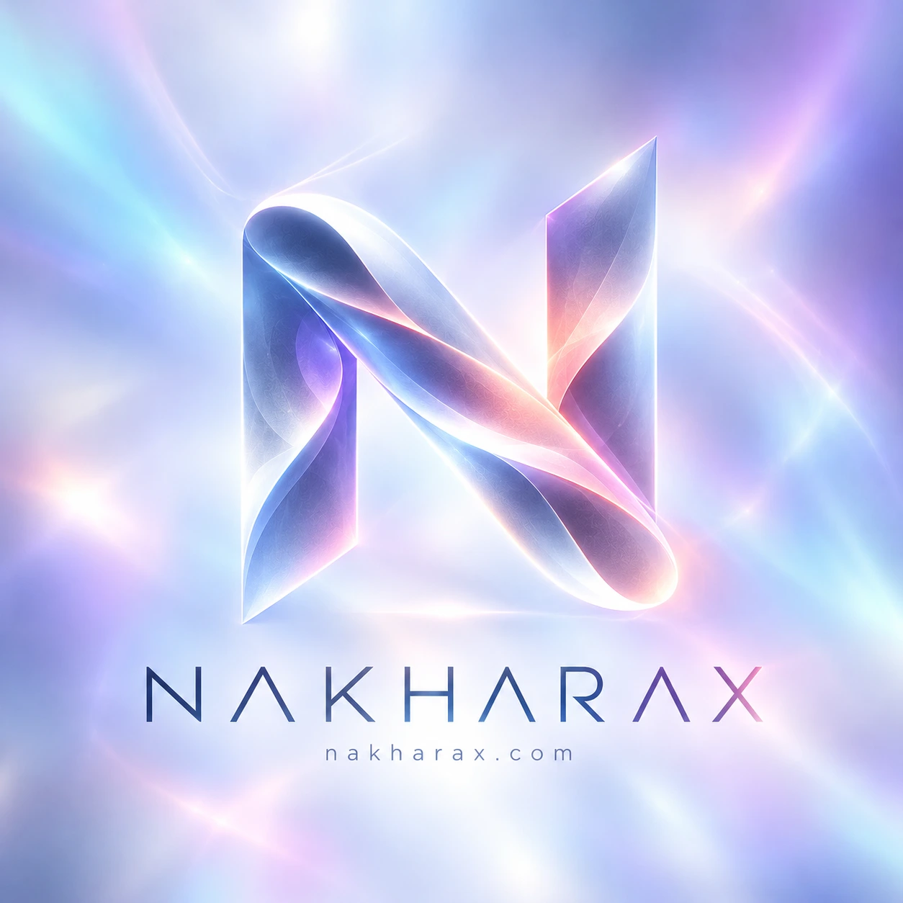

01 // CLARITY
◈
ความชัดเจนในเป้าหมายและขอบเขต
Every venture begins with an explicit problem boundary, transparent scope, and disciplined engineering architecture.
INDEPENDENT MINDS. ONE SHARED ORBIT. ความคิดที่เป็นอิสระ บนวงโคจรแห่งเป้าหมายเดียวกัน
สถาปัตยกรรมแห่งอนาคตที่เชื่อมโยงความมุ่งมั่นของมนุษย์ วิศวกรรมเชิงลึก และปัญญาประดิษฐ์เข้าด้วยกันภายใต้ระบบสุริยะเดียวกัน
A connected world of human ambition,
engineering, and
artificial intelligence.
Drag to orbit · Focus scene + ← → ↑ ↓ to rotate · Home to reset
01 / OUR NORTH STAR

เราสร้างพื้นที่ให้ความเชี่ยวชาญของมนุษย์และศักยภาพของ AI มาร่วมกันเปลี่ยนความคิดให้เป็นผลงานที่มีความหมาย
Our central star connects the vision. Each venture orbits with its own mission. Together, we build with clarity, discipline, and purpose.
Every venture begins with an explicit problem boundary, transparent scope, and disciplined engineering architecture.
Built around preparation, risk awareness, and repeatable decision-making rather than speculative hype.
Machine intelligence amplifies execution speed while human judgment retains direction and final accountability.
02 / THE ECOSYSTEM
Select an orbit.
Discover what we're building.
เลือกวงโคจรของดาวเคราะห์แต่ละดวงเพื่อสำรวจโปรเจกต์ของเรา
01 / TRADER WORKSPACE
ORBIT 01 // ACTIVE DIRECTIONA Trader Risk & Discipline Workspace. Designed around preparation, risk awareness, and consistent decision-making — not the promise of returns.
พื้นที่ทำงานเพื่อการบริหารความเสี่ยงและวินัยสำหรับเทรดเดอร์ ออกแบบมาเพื่อการเตรียมตัว การประเมินความเสี่ยง และความสม่ำเสมอในการตัดสินใจ ไม่ใช่การสัญญาผลตอบแทน
Free Core Forever is the product direction. Business and ecosystem services support the wider vision.
03 / HUMAN DIRECTION. MACHINE LEVERAGE.
Hermes ประสานงานทีม AI เฉพาะทางภายใต้การกำกับดูแลของมนุษย์ มนุษย์เป็นผู้กำหนดเป้าหมาย ขอบเขต และรับผิดชอบต่อผลลัพธ์สุดท้ายเสมอ
Hermes brings the AI workforce into a shared operating vision. People define the purpose, set the boundaries, and remain accountable.
AI amplifies the work.
Human judgment stays at the helm.
Every operation originates from explicit human intent. Leadership and domain operators define the mission objective, ethical guardrails, and strict operational scope before any task enters orchestration.
ทุกภารกิจเริ่มต้นจากความตั้งใจของมนุษย์ ผู้ดูแลระบบกำหนดวัตถุประสงค์ ขอบเขตการทำงาน และเกณฑ์ความปลอดภัยอย่างชัดเจนก่อนส่งต่อให้ระบบ
04 / THE NEXT ORBIT
ร่วมสำรวจงานวิศวกรรม โครงสร้างระบบ และโปรเจกต์ในเครือ NakharaX Group ผ่าน GitHub
Explore our work and connect through GitHub.